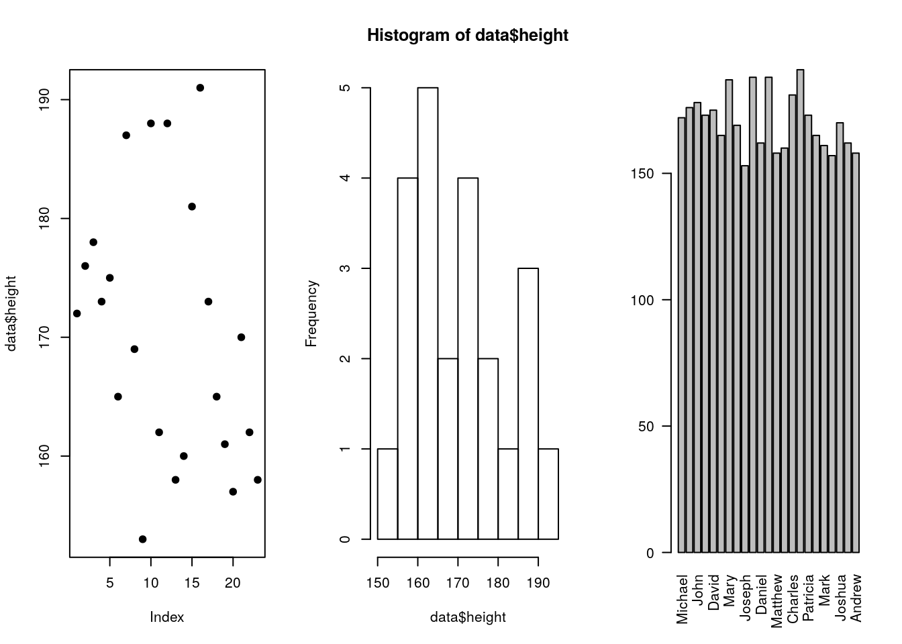

Chapter 2 Installation
Installation from source is also possible for numerous (and also exotic) platforms. Manual compilation is easy when the required compilers are already ship with the operating system (e.g., Unix/Linux) in the usual configure/make/install steps. Compilers are also available for MS Windows but might require some more installation/configuration. Thus, this is not recommended if not really needed.
2.1 Interfaces and Development Environments (IDE)
The basic R installation comes with a command line interface (CLI), possibly enhanced by some limited graphical user interface (GUI) capabilities on Windows and Mac. The CLI is basically all you need, and if you are a command line enthusiast you can basically stop here :).
For all others: various so called integrated development environments (IDEs) exist (e.g., R commander, RStudio, and others). IDEs typically provide interactive command line access (CLI), but also an editor where we will develop code and additional features (such as package and source file management, access to help pages, …).
One popular IDE for R is RStudio. RStudio is free to use and open source (but developed and maintained by a private company) and is available for all operating systems (MS Windows, Mac OS X, Linux). To install visit https://www.rstudio.com/products/rstudio/download/ and download the free RStudio Desktop version which fits your operating system. For linux users: RStudio is typically also available via package manager (apt, yum, …). Ater installation and starting RStudio you should see the following IDE:
The interface consists of an editor (top left), the R command line (bottom left), a summary of your current workspace (might be empty; shows all objects defined in the current R session; top right) and access to plots, help pages, and packages (bottom right).
We will use RStudio during this course, however, feel free to use the pure CLI (there are also plugins to text editors such as vim/neovim) if you are more efficient when not using an IDE.
2.2 Interactive Examples
For today we will only try out some basic examples to understand the IDE, we will learn all the details about R’s data types, plot and data I/O functions over the next weeks. Don’t worry if you don’t know in detail what’s going on!
For these small interactive examples you will only need the R console (bottom left panel of RStudio). You could, of course, write a script and execute it from the script, however, this is not needed. Thus just try to go trough the small exercises below by typing in the commands to the R console.
2.2.1 R as a basic calculator
R can be used as an advanced calculator. As a first example let’s find out what 5 to the power of 2 is. It is obviously 25, but let’s try to solve it with R. To do so we create a variable called a and assign the numeric value 5 to it:
# Define a new variable `a` and set `a` to 5
a = 5
a <- 5 # preferred way
# Show if it worked
print(a)## [1] 5# A to the power of `2` in different ways
a * a## [1] 25a**2## [1] 25a^2## [1] 25Let’s assume you don’t only have to compute \(5^2\) but for a set or sequence of numbers. A sequence of numbers is a vector. E.g., c(1, 2, 3) is a vector which contains three different numeric values, 1, 2, and 3. Let’s first specify a new variable, I’ve called it b, which should contain a set of numbers between 0 and 10. In R we can use the function seq(...) which returns us a sequence of values between two limits (from … to).
# Define a sequence from 0 to 10
b <- seq(from = 0, to = 10)
print(b)## [1] 0 1 2 3 4 5 6 7 8 9 10We could now take each element to the power of two (let’s say calculate \(0^2\), \(1^2\), … element by element which, at least by hand, will take quite some time. In R (as in other programming languages) we can also perform this calculation on a vector which solves it element-wise. Thus, b^2 will take each element of b to the power of 2.
# b to the power of 2
b^2## [1] 0 1 4 9 16 25 36 49 64 81 100R also provides a wide range of plotting function. We can use plot(...) to visualize how b^2 looks like by doing something as follows:
# Plot b versus b^2
plot(b, b^2)
lines(b, b^2, lty = 2)
# Adding b versus b (linear)
lines(b, b, col = "red")Another important feature of all programming languages is data import and export. I’ve put a small CVS (comma-separated values) file on OLAT which contains the names and the height of some persons.
Download the csv file from OLAT and import the data set using the read.csv(...) function (see below). read.csv(...) returns the content of the file ("height.csv") if it is able to read the file. If the file is not a CSV file, contains strange things, or is just not well formatted, read.csv will quite likely drop an error and stop.
In our case the CSV file should be well-formatted and read.csv should return the data set. We directly assign the data set read from the file to a new variable called data. After the import, the data set will be stored on data and we can use it for our further explorative data analysis. data.frames are somehow similar to XLS tables, a matrix-style data type which consists of rows and columns. Variables are stored in columns, in this case the name of the person and the height of the person, very similar to “_column A, column B, …" in Excel. The rows (23 rows in this example) contain the different persons/individuals and are (in this case) numbered from 1 to 23, just like in Excel.
In data.frames we can easily access the different columns of the data set using the $ operator. data$name tells R that we would like to have the data/content of the colum,n name from our data set stored on the variable data. The same yields, of course, for data$height. This allows us to easily calculate the mean height of all our individuals by calling mean(data$height).
data <- read.csv("height.csv") # Reading CSV data set
head(data, n = 3) # First three lines of the data set## name height
## 1 Michael 172
## 2 James 176
## 3 John 178class(data) # 'data' is a 'data.frame' object.## [1] "data.frame"mean(data$height)## [1] 170.5217Try to use the min and max function to see how large the talles and shortest ones are. Also try to call summary on the whole data.frame/object or on one specific column. Just for having some fun: let’s try to use different plotting methods to visualize the data set.
plot(...)to plot the heighthist(...)to get a histogram of the height of the individualsbarplot(...)to get a barplot. With the names. Hint: you will need something likebarplot(..., names.arg = ...).
In R you can always get help by calling ?<function>, e.g., ?plot or ?hist. Try to find some help there if something is not working or to find out which options the different functions provide. For example: changing plot style, adding color, add title and labels, and many more. 